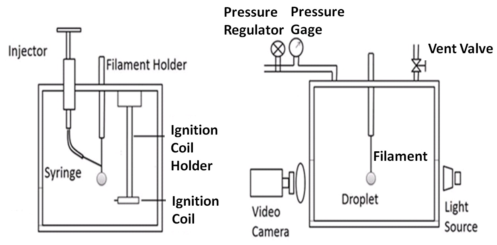
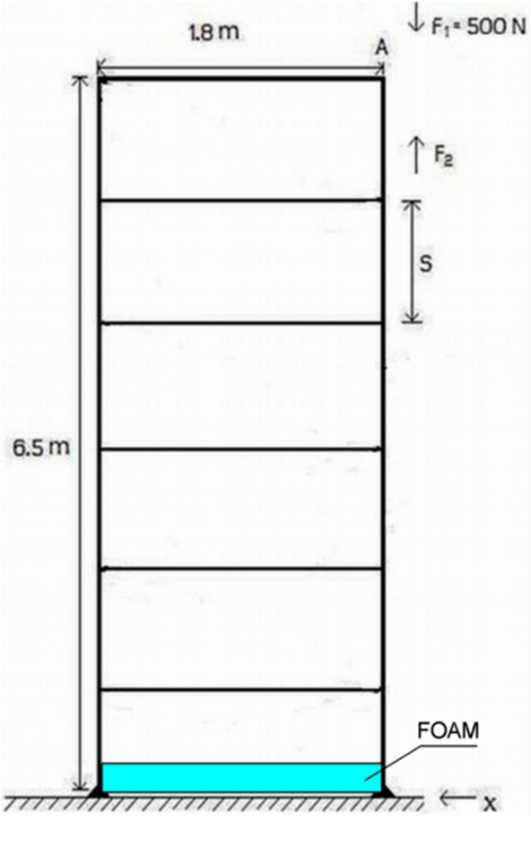
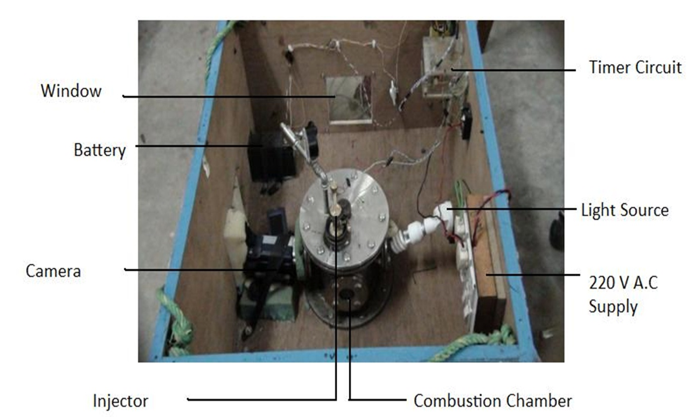
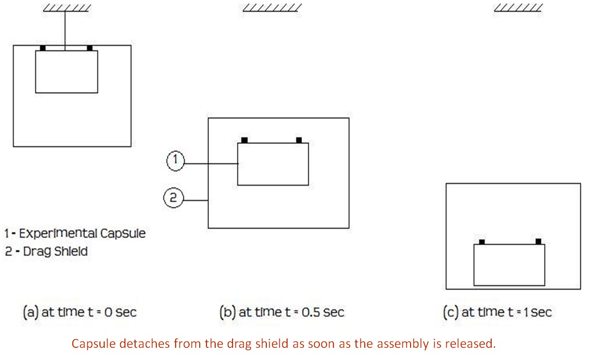

Experimental setup
Combustion Chamber

Drop Tower

Measurement Capsule

Use of Drag Shield

- For micro gravity experiment, the measurement time (1 s approx.) is enough to study the burning history of small diameter droplets. Hence, the corresponding height of the tower was fixed at 6.5 m giving allowance for the foundation and damping system to arrest the fall of the combustion chamber. The drop height was 5 m.
- The purpose of the drag shield is to reduce the air resistance acting on the combustion chamber and aids in achieving microgravity condition.
-
The capsule comprised of:
- The combustion chamber
- The light source (A 15 W compact fluorescent lamp)
- CCD video camera
- 12 V D.C source
- 220 V AC supply switch board
- Ignition apparatus
Imaging System
- In order to capture the droplet combustion process, backlighting was used. Luminous photography was used to study flame structure of the droplet during the entire burning process.
- A 15 W CFL bulb was placed right behind the droplet in the optical axis of the video camera to backlit the image.
- The video camera (30 fps) used is a Sony HD CCD camera with an optical magnification of 10x in order to achieve further magnification without compromising the clarity of the acquired images.
Experimental Procedure
-
For micro gravity experiments:
- Install the instruments and test chamber. Install the camera and illumination bulb.
- Lift the capsule to the required height on the drop tower (~7 m) and transfer the load onto the release mechanism. Maintain center of gravity of the load properly.
- Form the droplet on the bead of glass filament using the injector.
- Activate the imaging system and perform optical alignment.
- Heat the ignition coil for one or two seconds and then trigger the circuit using the circuit control panel.
- Activate the release mechanism as soon as the drop starts burning. Initial combustion occurs under normal gravity and subsequently under micro gravity.
- Perform image analysis to obtain droplet diameters at different time instants.
-
For normal gravity experiments:
Above procedure is followed except steps 2 and 6.